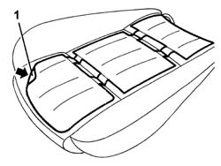
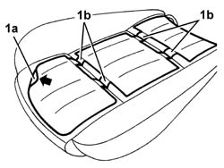

7045M22 l/h or r/h front seat cushion heat pad - r+r following electrical wiring check
- Path
- Procedures > 70 FITTINGS > 7045 FRONT SEATS > 7045M front seat handling > 7045M22 l/h or r/h front seat cushion heat pad - r+r following electrical wiring check
- Kind
- repair procedure (removal / refitting; the operation number is the code)
- Applies to
- all engines; all production periods
- Interactive page
- https://sloeber94.github.io/elrnDB-a147/en/#/3025873
Applies to: all engines; all production periods
 Removing
Removing
 Refitting
Refitting7045A10 l/h or r/h front seat (one) - r+r
7045A43 seat exterior guard - r r
7045A44 seat interior guard - r r
7045A86 (One), front SEAT FRAME left or right - R.R.
1. Remove the heat pad by detaching it from the padding.

Applies to: all engines; all production periods
Refitting
RemovingCheck that the heater pad is not damaged.
1. Position the heat pad (1a) and attach its adhesive side to the padding.

Applies to: all engines; all production periods
7045A86 (One), front SEAT FRAME left or right - R.R.
7045A44 seat interior guard - r r
Topics linked from this page (5)
- 7045A10 l/h or r/h front seat (one) - r+r
- 7045A24 squab knob - r r
- 7045A43 seat exterior guard - r r
- 7045A44 seat interior guard - r r
- 7045A86 (One), front SEAT FRAME left or right - R.R.